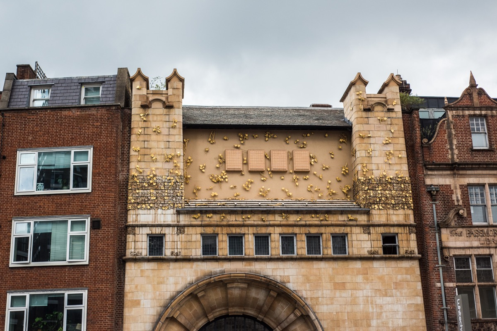
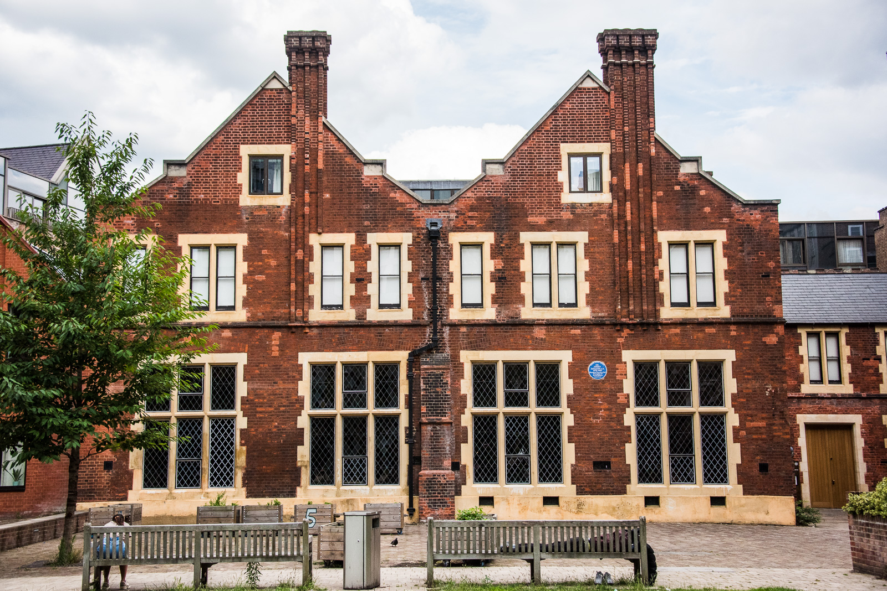
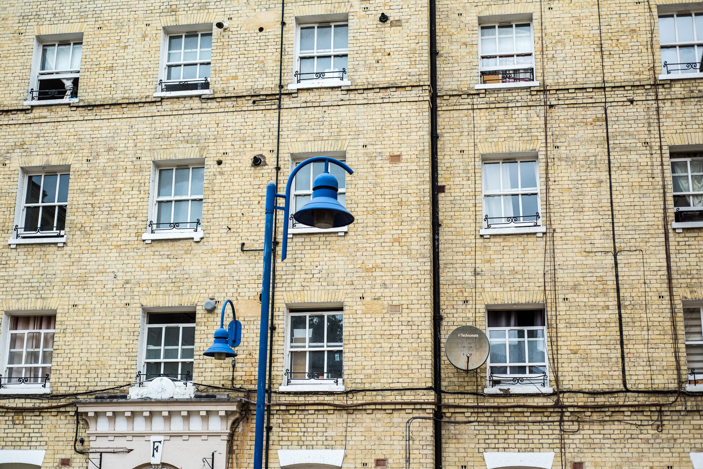
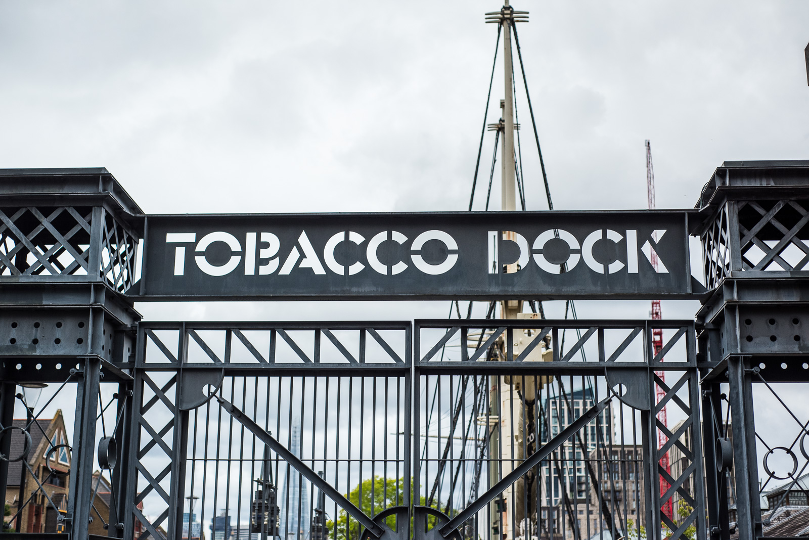

Planner &
Walking Guide
The guide has been leading this walk for Open City for around four years. His day job is town planning, with a particular focus on the east of London.
His interest in this part of London is personal as well as professional.
The walk goes from Whitechapel to Wapping and takes about two hours. It is not a Jack the Ripper tour. The guide is at pains to say this early. Jack the Ripper tours operate in this area; he will not be giving one. He mentions it so that nobody is disappointed.
Toynbee Hall &
The Settlement Movement
Toynbee Hall was the first settlement house — the first time anyone tried this particular approach to the social problems of the East End. The idea: bring Oxford and Cambridge students into the neighbourhood to experience firsthand the lives of the people there. The future leaders of Britain would carry that understanding with them. This was the Settlement Movement, and it spread throughout Britain, Australia and America. Toynbee Hall was where it began.

Clement Attlee — Britain's first Labour Prime Minister after the Second World War — spent time here. William Beveridge, who founded the welfare state, was here too. The connections between the people who worked in Toynbee Hall and the social legislation of the 20th century are direct and documented.
The building itself dates from the 1880s, Grade II listed, modelled on an Oxford or Cambridge college — the point being that the architecture itself would signal the ambition of the institution. It is still used for welfare purposes. During the week, people come to learn about immigration law, access education, use the facilities. It was built as a civic institution and it functions as one.
Next to it, the guide points out the site of the 4% Industrial Dwellings Company — one of the early model dwellings initiatives, initiated by Nathaniel Rothschild. The idea: private investors put money in and received a 4% return; the capital built housing for the poor. The 1970s housing visible today replaced a six-storey Victorian block that was deemed unfit for habitation. The Industrial Dwellings Society still exists and operates across the East End.
100,000 People &
Three Synagogues Left
At its peak, the Jewish population of Whitechapel and the surrounding streets was estimated at around 100,000 people. They came primarily from Russia and Eastern Europe following the pogroms of the 1880s and after, settling in the area because it was the cheapest part of London to live and because communities from home were already there.

Two reasons, the guide says. Some moved out — to Stamford Hill, Golders Green, Ilford — as they became more prosperous, following the pattern of immigrant upward mobility familiar from every other group in this area. And the Bangladeshi community, which now makes up roughly a third of the local population, moved in as the Jewish community moved out.
Of what was once 100,000 people and hundreds of institutions — synagogues, newspapers, schools, cultural societies, Yiddish theatre — only three synagogues remain and perhaps 2,000 people. The Jewish Daily Post building survives on Whitechapel Road, its Star of David signage still visible. It was a Yiddish newspaper; what you're looking at is one of the last physical traces of a world that has almost entirely gone.
The Gallery &
The Leaves Added in 2012
The Whitechapel Gallery — together with the Whitechapel Library next door, now absorbed into the gallery — dates from the 1880s and 1890s, the creation of Samuel and Henrietta Barnett, the social reformers whose names come up repeatedly on this walk. The purpose: to bring art to people who had no access to it, in a part of London where most people worked six days a week and had very little else.
Cézanne was exhibited here. Hockney. Gilbert and George. It has remained, throughout its history, a serious exhibition space with a particularly strong record for showing work before it was widely recognised elsewhere.
The gilded leaves at the very top of the building were only added in 2012 — by the artist Rachel Whiteread. There was always meant to be decoration at that level, but it was never executed. More than a century after the building opened, the original design was finally completed. The leaves are intended to represent the Tree of Life, a reference to the area's Jewish heritage. The weather vane is also a recent addition, put up for the 2012 Olympics.
St George's German Church
& the Sugar Bakers
Germans were, at one time, the largest immigrant population in London — 13,000 people, arriving for employment as their own economy faltered. They were known particularly for their work in the sugar refining industry and on the docks. St George's German Lutheran Church was their institution, dating from 1762 and still standing.
When the First World War came along, anti-German feeling in Britain was severe. The German population of the East End largely relocated — back to Germany, or elsewhere. The community that had built this church and school essentially ceased to exist. The church continued as a place of worship until 1996; it is now used for performances and events. It has box pews and a gallery inside, and is one of the more atmospheric small buildings in the area.
The Peabody Estate:
Shared Toilets Until the 1970s
George Peabody was an American banker who lived in Britain, loved it, and wanted to do something for his adopted country. He originally donated £150,000 to improve housing for the poor of London — a sum that eventually rose to half a million pounds, an enormous amount in the 1870s and 1880s. He also established JP Morgan, the bank. There is a statue of him near the Royal Exchange in the City.

The first Peabody estate was built near where this walk starts, just off Commercial Street. The second wave — of which this is one — came in a cluster across East and central London: Covent Garden, Islington, Finsbury, and here. They all look broadly similar: five stories, simple brickwork, inset windows, generous entrances, blocks identified by letters.
Each block had its own scullery and shared toilet facilities — until the 1960s and 1970s, when every flat was given its own. Some flats were also made bigger during that renovation to accommodate larger Bangladeshi families. Peabody today is one of the biggest social landlords in the country, providing around 100,000 homes across London and the southeast.
One block on this estate was hit by a fire bomb in the Second World War. A number of people died. There is a memorial. The block was eventually rebuilt. A second block was partially destroyed and then demolished in the 1970s — the realization having come that this dense urban neighbourhood needed somewhere for children to play more urgently than it needed another block of flats.
The Battle of Cable Street,
4 October 1936
Germany had Hitler. Italy had Mussolini. Britain had Oswald Mosley and the British Union of Fascists. To mark their fourth anniversary, they planned a march through the Jewish East End, with all routes converging at Victoria Park. A petition signed by over 100,000 people asked the Home Secretary to ban it. He allowed it to proceed.
On 4 October 1936, approximately 100,000 counter-demonstrators gathered. There were around 5,000 marchers and 6,000 police. The march was turned back — sent instead to Bethnal Green and then dispersed. It was not allowed to proceed through the Jewish neighbourhood.
Recent historical reassessment has complicated the original narrative. Much of the disorder was between demonstrators and police, not between demonstrators and fascists. But the symbolic significance remains: Britain, in a moment when fascism was gaining ground across Europe, turned it back from the streets of the East End. Two concrete results followed: it became illegal to wear a political uniform in public, and any march now requires prior approval from the police and ultimately the Home Secretary.
The Cable Street mural was painted in 1983 — 40 years old now, and still looking good. It was painted by Dave Binnington and three others. Among its images: Hitler in his underpants above Oswald Mosley, the phrase No pasarán (a reference to the Spanish anti-fascist resistance), marbles thrown at police horses, milk bottles, and a mix of Jewish, Irish and broader East End figures. Asian figures were added later, because the artist wanted to make clear that fascism didn't end in 1936.
Wilton's Music Hall:
The Last One Left
Wilton's Music Hall is the last surviving grand music hall in the world. The building originates from the 1690s — the first version burned down, was rebuilt in the 1870s, and then lasted only about ten years as a music hall before closing. It was used as a Methodist hall, then as a tailor's warehouse, and faced demolition in the 1970s before being gifted to the London Music Hall Trust.
Over the course of twenty or thirty years, it was slowly restored. It is now a fully functioning performance venue and film location — The guide has seen it used for things he can't quite place but remembers the candles in the sconces. Frankie Goes to Hollywood filmed a video here. It has been used for Sherlock. It runs panto at Christmas.
Before the Central line existed, before public transport made the west end of London accessible to ordinary people, the music hall was where East Enders came for their entertainment. This was a place of genuine popular culture — and the fact that Wilton's survives, intact and still in use, while every other music hall of comparable age and character has been demolished or converted, makes it genuinely rare. It is slightly off the beaten track, which is probably why it survived. People who find it are usually glad they did.
Tobacco Dock &
What the London Docks Were
Tobacco Dock is one of the finest industrial buildings in London — Grade I listed, which means the highest possible protection. It was completed between 1815 and 1819 as part of the London Dock (originally called London Dock, not Tobacco Dock; the current name came later). The distinctive lantern lights at the top, the vaulted storage space below, the very high walls: all of it designed to hold high-value goods — tobacco, rice, wine, brandy — under conditions that discouraged theft and satisfied the customs authorities.

The London Docks closed in 1969. Containerisation had changed everything — goods now arrived in much larger ships, in standard containers, which required deep-water facilities further downstream. The dock closed almost overnight, and with it the entire supporting economy of hotels, lodging houses, shops and workshops that had grown up around it.
In the late 1980s, Terry Farrell — the same architect who designed the MI6 building at Vauxhall — converted Tobacco Dock into a shopping centre. It lasted two years. Wapping at the time was too quiet, too far from where people habitually shopped, too difficult to get to. Nobody came.
Since then it has been used as an events and conference space. It is worth going inside if the building is open — the atmosphere is remarkable, and the two replica ships (the Sea Lark and the Three Sisters, brought here in the 1980s so that local children could learn about the dock's history) are now themselves decaying curiosities, untouched for thirty years.
Wapping: Warehouse Flats,
Turner's Pub & the River
Wapping has a quietly atmospheric feel that sets it apart from the wider development activity of the riverfront. The high walls of the old dock are still there. The canals that connected the warehouses to the river are still there, now used as decorative features in the public realm. The Georgian houses occupied by the dock managers are still there, on either side of what was the main dock entrance.
Turner's Old Star pub — named after Joseph Turner, the painter — stands on this stretch. Turner owned this building in the early 19th century and lived in it, in a house he called by a different name. He would spend long periods in the East End, close to the river, painting the Thames and its working life. The Fighting Temeraire is the most famous result. The pub was renamed in his honour by later owners.
The first conversion of a warehouse to residential use in Wapping happened in 1970. It must have taken real nerve — the area was desolate, the dock had only just closed, and there was almost no residential community here at all. The flats in that converted warehouse are lovely, overlooking either the river or this side. That first conversion started something; fifty years later the transformation is more or less complete, with much taller new buildings now filling the gaps between the old warehouses.
The guide ends the tour at the riverside, with the Thames and the south bank in front of the group. It is one mile from Parliament. On a clear day you can see across to Chelsea and Pimlico. Wapping Station is five minutes away. Tower Bridge is fifteen minutes' walk in one direction; St Katharine Docks and the City in the other.